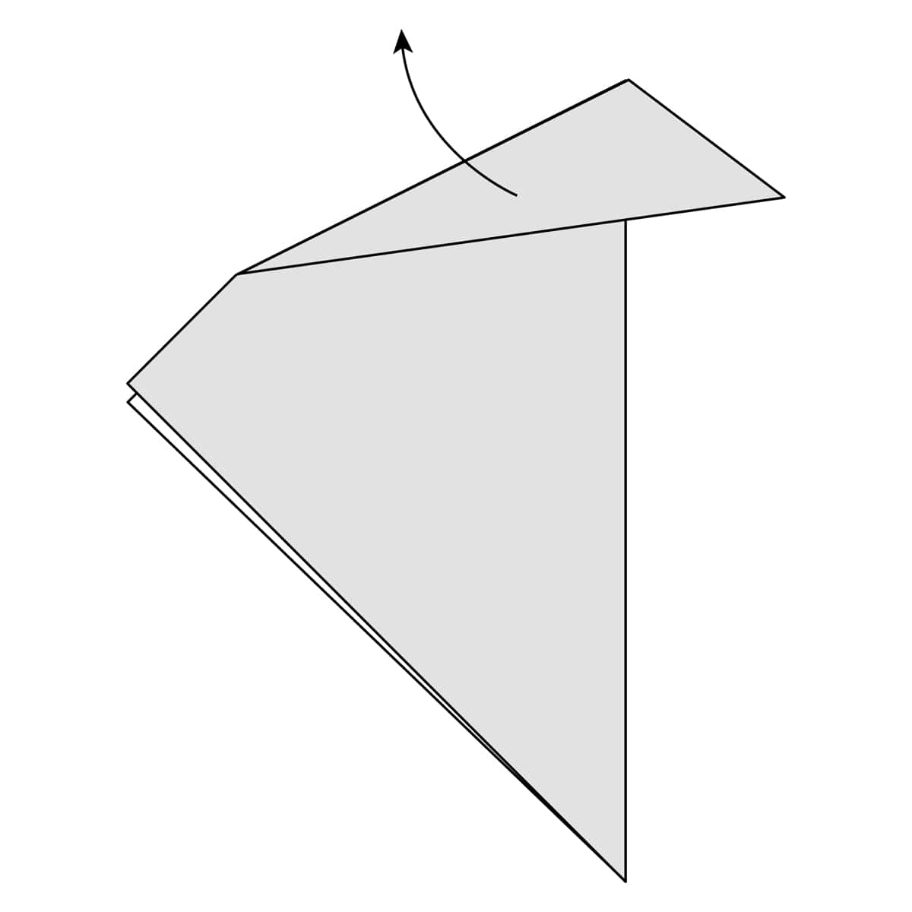
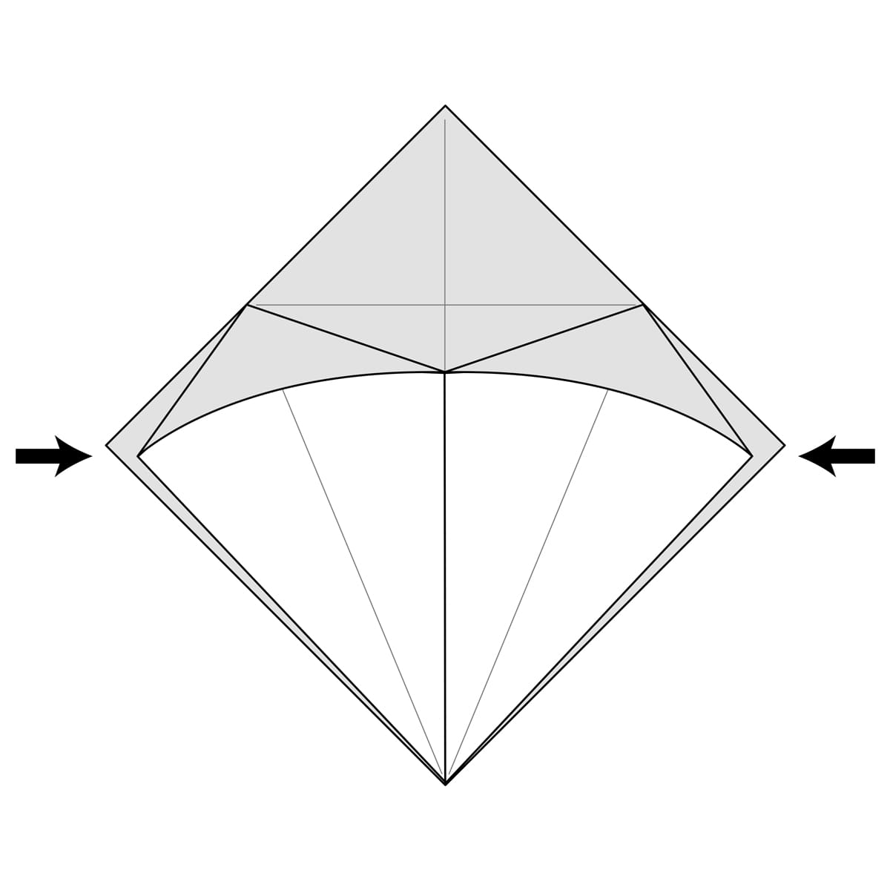
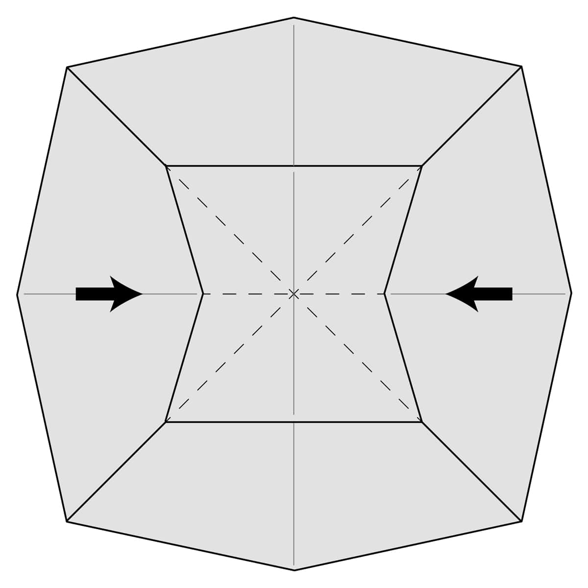

With a Mountain Fold the crease bends the paper down and the crease resembles a mountain.
With a Valley Fold the crease bends the paper up and the crease resembles a valley.
Start with a square of paper, white side up and fold it in half diagonally. This isn’t actually part of the Inside Reverse Fold but it’ll give you a shape that you can use to make the Inside Reverse Fold on.
Fold along the dotted line. This is where you’re going to make the inside reverse fold. Your fold doesn’t have to match the exact position of the line so don’t worry if it doesn’t measure up exactly.
Crease this fold well and then unfold it.
Turn the paper over.
Make a fold along the dotted line. This will be the opposite side of the fold you made earlier. Now you’re folding this the other way.
Crease this fold well and then unfold it.
Turn the paper over again so it’s back the way it was before.
Push the paper inside the model following the two folds you made before.
Push the paper all the way inside the model and flatten along the creases you already made.
The completed Inside Reverse Fold. The dotted line shows the path of the paper inside the model.
Start with a square of paper, white side up and fold it in half diagonally. This isn’t part of the Outside Reverse Fold but it will give us a shape we can use to demonstrate the fold.
Fold the paper along the dotted line. This will be where you will make the Outside Reverse Fold. Your fold doesn’t have to line up exactly where the line is so don’t worry about making it completely perfect.
Crease this fold well and then unfold it.
Turn the paper over.
Fold the paper along the dotted line. This will be the opposite side of the crease you made earlier.
Crease this well and then unfold it.
Fold the paper outside the model along the creases you already made. To make it a bit easier you can open the model up.
Fold the paper down along the creases you already made.
As you fold the paper down close the model up again along the crease you made in step 1. The paper you folded down should flatten nicely on the outside of the model.
The completed Outside Reverse Fold. It’s the opposite of the Inside Reverse Fold. The shape of the fold is essentially the same it’s just folded the other way and outside the model.
Start with a square of paper with the white side up. Fold the paper in half along the dotted line and then unfold it. You will use this line a guide in later steps.
Fold the paper along the dotted line. It should line up with the crease you made in step 1.
Crease this well and unfold.
Fold the paper on the other side along the dotted line. It should also line up with the crease you made in step 1.
Crease this well and unfold it.
Fold both sides of the paper along the dotted lines back to the centre following the two creases you just made. The paper will bunch up in the middle and you will make a new crease along that small vertical dotted line.
After step 6 you should have a triangle shaped flap of paper. Fold this down to the side. In general it doesn’t matter which side you fold this flap down to. Different models will have different instructions for which side to fold it to.
The completed Rabbit Ear Fold.
This example starts with a Preliminary Base. The instructions for this base are further in this guide. Squash folds can be performed on a variety of different shapes, not just this base.
There are four flaps of paper on this base, lift one of them up. You will make a squash fold on this flap.
Push down on the crease so you completely flatten the flap. Make sure both sides are symmetrical.
The completed Squash Fold.
This example uses a rectangle shaped sheet of paper but you can easily make this fold with a square or any other shape. Fold the paper to the side along the dotted line.
Fold the paper back the other way along the dotted line. Note that this new fold is a little bit to the left of the first fold you made.

The Completed Pleat. If you look at the shape of the fold from the side it kind of looks like a letter Z.
Start off with a square sheet of paper with the white side up. Fold the paper in half along the dotted line and then unfold it.
Next make a Pleat by folding the paper to the left along the dotted line. Your fold doesn’t have to match the one in the diagram exactly. It just needs to be roughly in the same place.
Fold the paper back to the right along the dotted line. Your fold doesn’t need to be exactly in the same place as the diagram. This is just practice. You now have a Pleat.
Fold the paper in half again along the crease you made in step 1.
The completed Crimp. Notice how it’s kind of like a pleat made on the outside of both sides of the paper.
For this example start off with a Square Base. The instructions for this base are later in this guide. This is the most common way to make a Petal Fold. Fold the top right flap of paper to the centre along the dotted line.
Crease this fold well and then unfold it.
Fold the top left flap of paper to the centre along the dotted line.
Crease this fold well and then unfold it.
Fold the top part of the model down along the dotted line. The end points of this line should line up with the tops of the lines from the two creases you just made.
Crease this fold well and then unfold it.
Open up the top flap of paper folding it upwards along the horizontal crease you just made.
As you lift the paper up also fold in the sides along the two creases you made on each side.
Lift the paper all the way up and flatten everything along the 3 creases you already made. If you made the creases well everything should fall into place easily.
The completed Petal Fold.
Start off with a Square Base that has one of the four flaps Squash Folded. This is the exact shape that you’ll usually see this Petal Fold Variation made on. Fold the top right flap to the centre along the dotted line.
Crease this fold well and then unfold it.
Fold the top left flap to the centre along the dotted line.
Crease this well and then unfold it.
Lift the top flap of paper up along the dotted horizontal line opening it up. There is no pre-existing crease along this line so you’ll have to make it yourself as you fold the flap up.
As you fold up the flap of paper also fold in the sides along the creases you already made on each side and push everything flat.
The completed Petal Fold Variation.
Start off with a Square Base that has one of the four flaps Squash Folded. You can make a swivel fold on many different shapes but this one is easy to demonstrate. Fold the top left flap of paper to the centre along the dotted line.
Crease this fold well and unfold it.

Lift up the top flap of paper making a fold along the dotted line from the top of the previous fold to the corner of the top coloured section of paper. There isn’t a crease here already so you’ll have to make this fold on your own as best you can.

As you fold along that dotted line the paper will automatically fold along the crease you already made on the left side. Push everything completely flat.

The completed Swivel Fold.
For this example start off with a Square Base. The instructions for this base are later in this guide. Fold the top part of the model down along the dotted line. This is just practice so don’t worry about making your fold in exactly the same place as the diagram.
Crease this fold very well and then unfold it.
Turn the model over.
Fold the top part of the model down along the dotted line. This will be along the crease you already made. Now you’re folding it the opposite direction.
Crease this fold very well and then unfold it.
The easiest way to make the Open Sink in this example is to open the paper up completely.
Push the paper inside the model following the square of creases that you made.
As you push the paper inside start to close the model back up folding along the creases that make the Square Base.

Continue sinking the paper inside the model following the existing creases and continue to close the model back into the Square Base.
Your paper should look something like this. Fold everything completely flat.
The completed Open Sink. The dotted line shows the path of the paper inside the model. Instead of sticking out like it was before the triangle at the top is now sunk inside the model.
Start with a square sheet of paper with the white side up. Fold it in half along the dotted line and unfold. You will use this line as a guide in later steps.
Fold the right side of the paper along the dotted line to the centre.
Fold the left side of the paper along the dotted line to the centre.
The completed Kite Base.
Start with a square sheet of paper with the white side up. Fold it in half along the dotted line.
Fold the paper in half again along the dotted line.
Bring the top flap of paper up.
Squash fold this flap of paper down. Make sure you keep both sides symmetrical. You should end up with a diamond shape.

Turn the model over.
Lift up the top left flap of paper to the middle.
Squash fold this flap of paper down. Make sure you keep both sides symmetrical. You should end up with a diamond shape matching the one on the other side.
The completed Square or Preliminary Base.